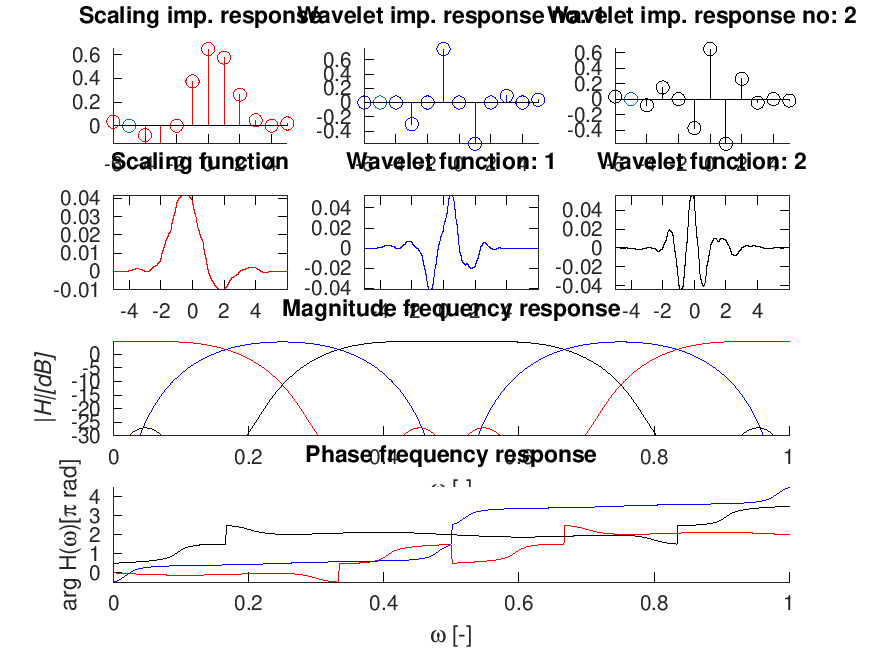
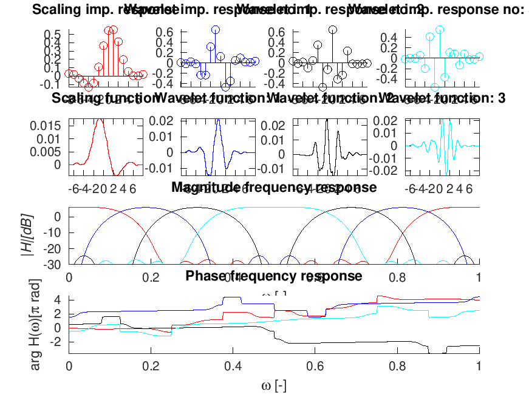
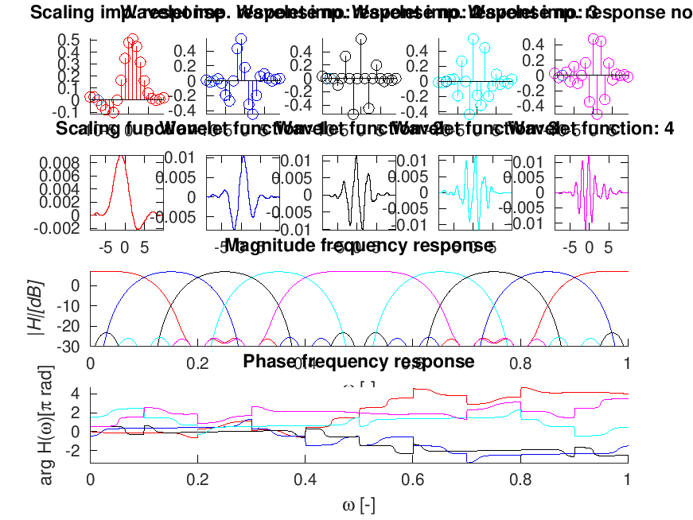

[h,g,a] = wfilt_cmband(M);
| M | Number of channels. |
[h,g,a]=wfilt_cmband(M) with \(M\in {2,3,\dots}\) returns smooth, 1-regular cosine modulated M-band wavelet filters according to the reference paper. The length of the filters is 4M.
wfiltinfo('cmband3');
This code produces the following output:
Scaling imp. responsWavelet imp. response Wavelet imp. response no: 2
0.6 +|+ F F 0.6 +|+ F 0.6 +|+ F
0.4 +|+ F% %F 0.4 +|+ % F 0.4 +|+ F % F
0.2 &|----------------0.0 &|-----------------0.0 &|---------------
+ F%+ + + + -0.4 +-++ + +F + + -0.4 +-++ + F+ F+ +
Scaling function-| Wavelet function: 1 Wavelet function: 2
0.04 +|+ +*** + ++-+|0.04 +|+ + +* + ++-+|0.04 +|+ + ** + ++-+|
0.03 +|+ ** ** + ++-+|0.02 +|+ * ***+ ++-+|0.02 +|+ ******* ++-+|
0.01 *|---------------0.00 *|----------------0.00 *|--------------|
-0.01 +++ + +****++-+-0.04 +++ + *+ + ++-+-0.04 +++ +**** + ++-+
-4 -2 0 2 4 -4 -2 0 2 4 -4 -2 0 2 4
| Magnitude frequency response
0 *|*****##########:math:``:math:``:math:``:math:``:math:``:math:``:math:``:math:``:math:``:math:``:math:``:math:``:math:``
|H|[dB]5 +|------------------------------------------------------------
-25 +:math:``:math:``:math:``:math:``:math:` `:math:`` *** ******##***##****** *** :math:``:math:` `:math:``:math:``:math:``:math:``
0 0.2 0.4 0.6 0.8 1
| Phase frequency response
4 +|+ #####
3 +|+ :math:``:math:``:math:``:math:``:math:``:math:``:math:``:math:``:math:``:math:``:math:`###################`:math:``:math:``:math:``:math:``:math:``
1
0
0 0.2 0.4 0.6 0.8 1

wfiltinfo('cmband4');
This code produces the following output:
Scaling imp. Wavelet imp. respWavelet imp. respWavelet imp. response no: 3
0.5 +|+ FF 0.6 +|+ F 0.6 +|+ F 0.4 +|+F F
0.4 +|+ F*F 0.4 +|+ F*F F 0.4 +|+ F * F 0.2 :math:`|`:math:``:math:``:math:``:math:``
0.2 :math:`|----------0.0 `|-----------0.0
-0.1 +FFFF ++ ++-0.4 +++++ +F ++ -0.4 ++++F +F ++ -0.4 ++++F+ +++
Scaling functioWavelet function:Wavelet function:Wavelet function: 3
0.015 +|+ ** ++++0.02 +|+ +**+++++0.02 +|+ +* +++++0.02 +|++ **++++|
0.01 +|+****++++0.01 +|+*+**+++++0.01 +|+*+***++++0.01 *|*********|
0.005 *|----------| 0 *|----------| 0 *|----------0.01 +|---------|
++ ++*** -0.01 +++ ** *+++-0.01 +++ ***++++-0.02 ++++ **++++
--4-20 24 6 --4-20 24 6 --4-20 24 6 ---2 024 6
| Magnitude frequency response
0 *|***########:math:``:math:``:math:``:math:`%%%%%%%%%%%%%%%%%%%%%`:math:``:math:``:math:``########*****
|H|[dB]0 +|------------------------------------------------------------
-30 :math:`%%%%%%%%%%%%%%%%%**########`:math:`#`:math:`#####*##**%%%%%%%%%%%%%%%%%`
0 0.2 0.4 0.6 0.8 1
| Phase frequency response
4 +|+ ######### ######################
2 :math:`|`:math:``:math:``%
-0 %|------------------------------------------------------------
+ + + + + :math:``:math:``:math:``:math:``:math:``
0 0.2 0.4 0.6 0.8 1

wfiltinfo('cmband5');
This code produces the following output:
Scaling imWavelet imp. Wavelet imp. Wavelet imp.Wavelet imp. response no: 4
0.5 +|+ FF 0.4 +|+FF | F 0.4 +|+ FF 0.4 +|+ F
0.4 +|+ FF 0.2 +|+%F F 0.4 F|+F% F 0.2 +|+F%%F 0.2 &|&&&&&&
0.1 &|-------0.0 &|-------0.0 &|-------0.0 &|--------0.2 F|-------
-0.1 +FFF+ + -0.4 +-+ +F+ -0.4 +-+F+F+ -0.4 +-+F+F+ -0.4 +-+FF +
Scaling funcWavelet functWavelet functWavelet functWavelet function: 4
0.008 +|+** +-0.01 +|+ * +-0.01 +|+ * +-0.01 +|+** +-+0.01 +|+* +-+|
0.006 +|*** +0.005 +|* **+0.005 +|****+0.005 *|******0.005 *|******|
0.002 *|-----0.000 *|-----0.000 *|-----0.005 +|------0.005 *|------|
-0.002 +-+ +**-+ +*+ +-0.01 +-+***+-0.01 +-+** +--0.01 +++**+-+
-5 0 5 -5 0 5 -5 0 5 -5 0 5 -5 0 5
| Magnitude frequency response
0 *|**######:math:``:math:``:math:``%%%%%%@@@@@@@@@@@@@@@@@%%%%%%:math:``:math:``:math:``######****
|H|[dB]0 +|------------------------------------------------------------
-30 @@@@@@%@@@@@@@@@@@@@@#:math:``#:math:``:math:`%%%%%`:math:``:math:``
0 0.2 0.4 0.6 0.8 1
| Phase frequency response
4 +|+ ********** ************@@@@
2 @|%@@@@@@@@@@@@@@@@@@@@@@@@@@@@@@@@@@@@@@@@@@@@@@@@@@@@@@@
0 @|------------------------------------------------------------
-2 +-+ + + :math:``:math:` `:math:``:math:``:math:``:math:``:math:`####`:math:``#:math:``:math:``
0 0.2 0.4 0.6 0.8 1

R. Gopinath and C. Burrus. On cosine-modulated wavelet orthonormal bases. Image Processing, IEEE Transactions on, 4(2):162--176, Feb 1995. [ DOI ]